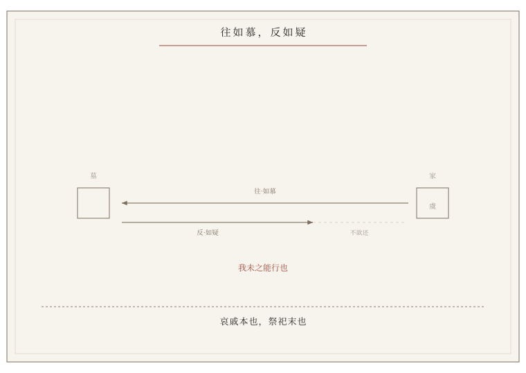

檀弓上 · 三·四十五 · 第 248 课
孔子在卫，有送葬者，而夫子观之，曰：「善哉为丧乎！足以为法矣，小子识之。」子贡曰：「夫子何善尔也？」曰：「其往也如慕，其反也如疑。」子贡曰：「岂若速反而虞乎？」子曰：「小子识之，我未之能行也。」注「慕谓小儿随父母啼呼」「疑者，哀亲之在彼，如不欲还然」「哀戚，本也；祭祀，末也」。
说什么事：见到别人的丧礼好，说「可以为法」，又说「我做不到」。
落在哪一层：礼，兼及礼意。论「本」与「末」。
为何编在此位：上节论礼副其情，此节论情过其礼。礼有本末，本者哀戚，末者祭祀；末易行而本难至。
【经】孔子在衛，有送葬者，而夫子觀之，曰：「善哉為喪乎！足以為法矣，小子識之。」子貢曰：「夫子何善爾也？」曰：「其往也如慕，其反也如疑。」子貢曰：「豈若速反而虞乎？」子曰：「小子識之，我未之能行也。」
【注】慕谓小儿随父母啼呼。疑者，哀亲之在彼，如不欲还然。速，疾。哀戚，本也；祭祀，末也。
【疏】言慕如小儿啼呼者，谓父母在前，婴儿在后，恐不及之，故在后啼呼而随之。今亲丧在前，孝子在后，恐不逮及，如婴儿之慕。疑者，谓凡人意有所疑，在彷徨不进；今孝子哀亲在外，不知神之来否，如不欲还然，故如疑。《问丧》云「其反也如疑」，郑注云「疑者不知神之来否」，与此相兼乃足。子贡之意，葬既已竟，神灵须安，岂如速反虞祭安神乎？但哀亲在彼，是痛切之本情；反而安神，是祭祀之末礼，故下文夫子不许。
送葬者 送柩至墓之人。孔子观其礼容。
识 注「识，式志反」。记之。
如慕 注「慕谓小儿随父母啼呼」。追而恐不及。
如疑 注「疑者，哀亲之在彼，如不欲还然」。彷徨不进。
虞 葬后安神之祭。注「祭祀，末也」。
我未之能行 我不能行此。
本末 哀戚为本，祭祀为末。
孔子在卫，有人送葬，夫子观看，说：「这丧办得好啊！足以为法了，小子们记着。」子贡说：「夫子为什么称善？」答：「他去的时候像小儿追慕父母，回来的时候像有所疑而不欲还。」子贡说：「何如速反而行虞祭？」夫子说：「小子记着，我还做不到。」
此节一问三答，一层深一层。孔子先称「足以为法」，子贡问其所以，答以「如慕如疑」；子贡再以礼之正论进——虞祭安神，礼所当然——孔子不作辩，只说「我未之能行」。此一句最重：称其法而不自居于法，见其法而不谓己已及。同一节中，法立而身不及，此为圣言之诚。
第一层 往如慕 疏解如小儿随父母啼呼：父母在前，婴儿在后，恐不及，故在后啼呼而随。今柩在前，孝子在后，恐不逮及。此「慕」字写的是「追不上」的慌。
第二层 反如疑 葬毕而归，疑亲之在彼，彷徨不欲还。注「如不欲还然」。《问丧》郑注「疑者不知神之来否」，疏谓「与此相兼乃足」：一就身言（不欲还），一就神言（不知来否）。二说相足，乃见其全。
第三层 速反而虞 子贡之问，是礼之正论：葬已竟，神灵须安，何不速归行虞？此问不为错。而孔子说「哀戚，本也；祭祀，末也」——虞祭是末，非废末，是末不当先于本。子贡欲以末济本，孔子以为本不可济。
第四层 我未之能行 此一句是本节之眼。若孔子只说「足以为法」而不言「未能行」，则法立而人假；若只说「未能行」而不言「足以为法」，则并法亦废。两者合看，乃见「法」与「行」之分：法者众人之所向，行者一人之所至。圣人不敢以所向冒所至。
与今日何干 见到好的，说「可以为法」，又说「我做不到」。承认标准高于自己，比宣称自己已达标准，更近于礼。今人好以「我认同」代「我做到」，此节正是一副解药。
| 左 | 右 |
|---|---|
| 其往也如慕 | 追而恐不及 |
| 其反也如疑 | 彷徨不欲还 |
| 岂若速反而虞 | 礼之正论（末） |
| 哀戚，本也 | 本不可济 |
| 祭祀，末也 | 末非可废 |
| 足以为法 | 法者众人所向 |
| 我未之能行 | 行者一人所至 |
画一条通往墓地的土路，视点略高。路左端一座新坟，坟前立着素幡；路右端一座宅门，门内可见祭器一角。路上行着一列送葬的人（七八个背影，衣素，前者引幡、后者扶杖），队形紧凑、步幅小而频。队列之后另有一人立在路中回望坟墓，脚向家门、身向坟墓。不写文字、不画人面细节。赭色只用在素幡的杆与回望者腰间的一条带上。
